OGV 功能详解
本手册按功能模块逐一介绍 OGV 的能力：每个功能都有入口位置、操作步骤与实际界面截图。 所有截图均来自系统真实运行界面，点击图片可放大。
地图设置与底图
底图决定"数据画在什么纸上"。OGV 内置 30+ 全球底图源，配合显示辅助开关，让同一份数据呈现不同的阅读效果。
入口：地图右下角底图控件（单选切换）；显示开关集中在侧栏 ⚙️ 设置 面板；常用开关也放在侧栏顶部"常用功能区"。
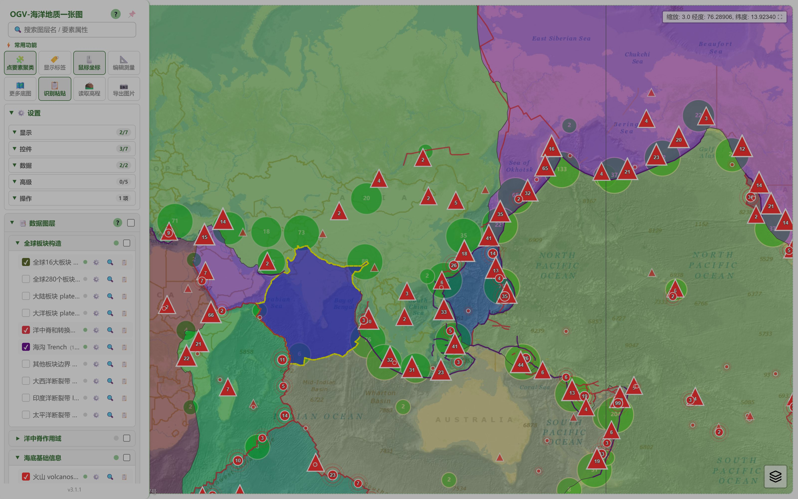
- 30+ 底图源：天地图（影像/矢量/地形）、ArcGIS（影像/街道/海洋/物理/地形）、GEBCO 2024/2025 全系列、ETOPO、EMODnet 水深、Macrostrat 全球地质、OpenStreetMap，以及"无底图"纯数据模式。
- Esri Wayback 历史影像：选择该底图时自动出现时相选择条，可回溯不同年份的卫星影像。
- 覆盖层：天地图全球境界、地名标注可与任何底图叠加。
- 视图辅助：比例尺、鼠标位置（经纬度/缩放读数）、经纬网、中心十字可独立开关。
- 深浅双主题：一键切换，面板、图例与地图配色全站适配。
图层管理
60+ 开箱即用图层按主题分组为图层树，勾选即上图；自带数据可拖入"本地图层"，不上传服务器。
入口：侧栏 📑 数据图层（内置图层树）、🗺️ 本地图层查看（自有数据）。
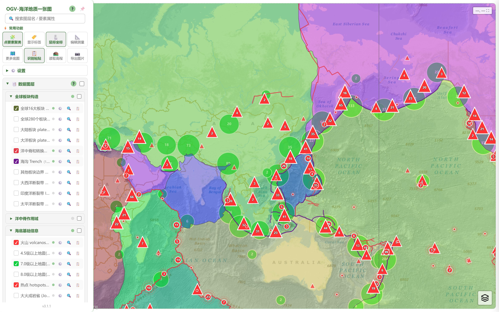
- 主题分组：板块构造、洋中脊作用域、海底基础信息、海洋地理、矿产资源、地质站位等 8 大主题，支持一键全选/全不选。
- 要素计数：每个图层标注要素数量，加载进度实时可见。
- 逐图层控制：图层行上的按钮可打开图层设置（颜色/图标/标签字段/透明度）、缩放到图层范围、打开图层属性表。
- 本地图层：GeoJSON 文件可直接拖入浏览器或上传/选择文件夹，数据只在本地解析，不上传任何服务器。
坐标投点
把手里的一批经纬度坐标快速变成地图图层：粘贴即识别，一键生成点图层，还能顺手调整字段。
入口：侧栏 🗺️ 坐标投点 按钮，展开投点编辑器。
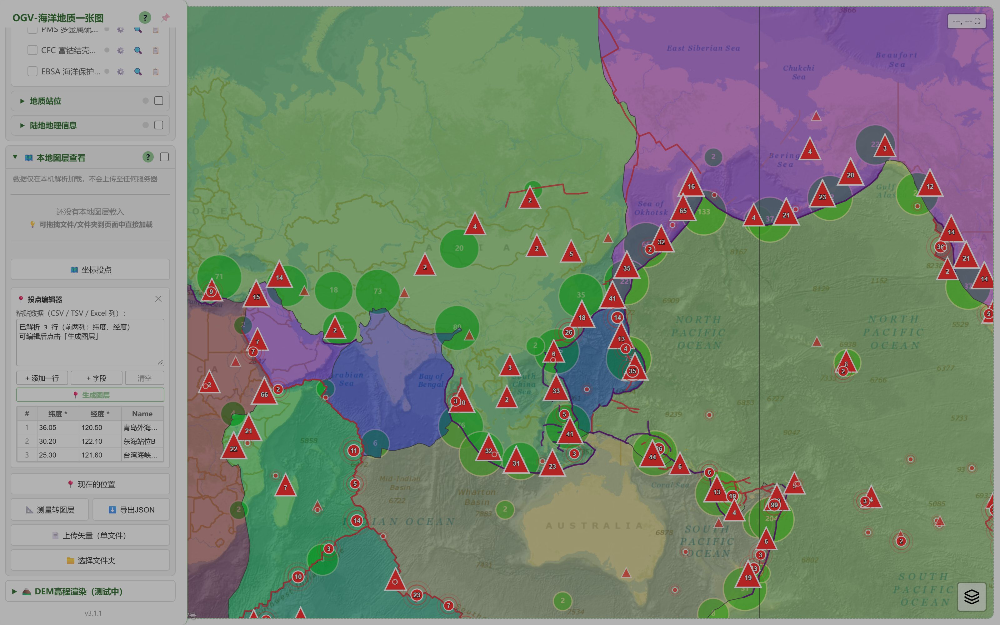
- 录入坐标：表格逐行填写纬度 / 经度 / 名称；或直接把 Excel、CSV、TSV 文本粘贴进粘贴框，前两列自动识别为纬度、经度。
- 全局剪贴板识别：开启开关后，在页面任意位置 Ctrl+V，剪贴板里的坐标会被自动识别并询问是否生成图层。
- 生成图层：点"生成图层"，坐标变成一个可勾选、可设置样式的点图层，与其他图层一样参与弹窗、属性表和导出。
- GPS 打点：📱 打开"现在的位置"，读取设备定位，填备注后记录为点位。
DEM 与高程查询
三条路径看地形：本地 GeoTIFF 渲染、点图查高程水深、3D 场景直接看立体地形。
入口：侧栏 🏔️ DEM高程渲染 区块；高程查询在 ⚙️ 设置 中开启。
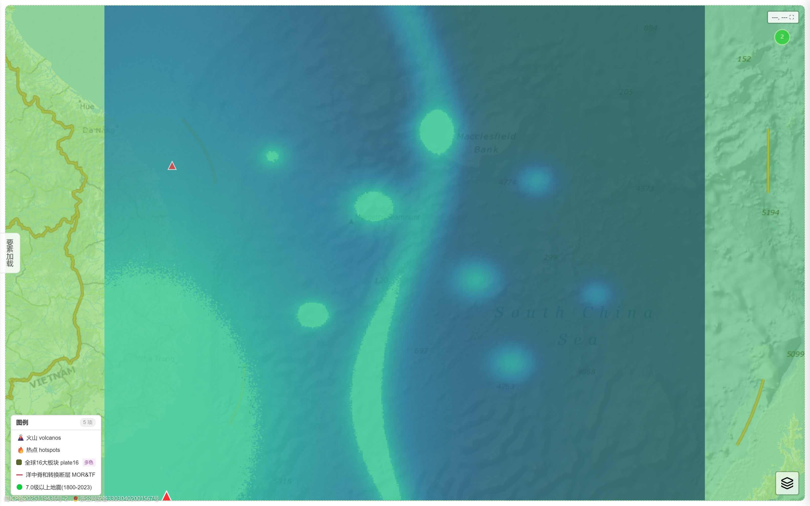
- 本地 DEM 渲染：加载 GeoTIFF 高程文件，按色带渲染为栅格图层；提供海底地形、自适应拉伸、直方图均衡、灰度 4 种色带，透明度可调。
- 点击查高程：开启"高程查询"后，点击地图任意位置即弹出该点的高程/水深值（数据源 GEBCO，可切换）。
- 3D 地形：进入 3D 视图后自动加载全球地形（含海底地形），山脊与海沟直接立体呈现。
3D 视图
基于 Cesium 的三维地球：地形立体、倾斜视角，2D 里勾选的数据图层自动同步到 3D 场景。
入口：常用功能区 / ⚙️ 设置中的 3D 视图 开关（与极地视图互斥，开启一方会自动关闭另一方）。
- 懒加载：Cesium 引擎（约 4MB）在首次开启时才下载，日常 2D 使用零负担。
- 地形：默认加载含海底地形的全球地形源，也可切换为平滑椭球。
- 底图同步：2D 当前底图自动映射为 3D 影像层，覆盖层数据同步渲染，换底图无需重开 3D。
- 操作：左键拖拽平移、滚轮缩放、右键/Ctrl+拖拽倾斜旋转；提供三视图切换（球体 / 平面 / 哥伦布视图）。
- 场景联动：深浅主题切换时 3D 场景的天空、雾效与配色同步调整；点击 3D 中的要素同样弹出属性。
弹窗与属性表
点任何要素都能看属性：轻查询用弹窗，深浏览用属性表面板——单要素全字段、整图层分页表格两种模式。
入口：点击地图上的点/线/面要素弹出属性弹窗；弹窗上的 ⚲ 缩放至、📋 详情 按钮进入更深一层。
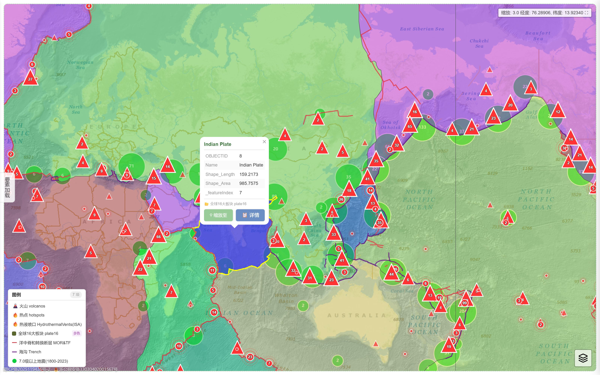
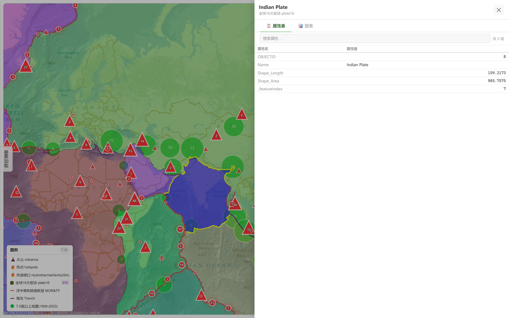
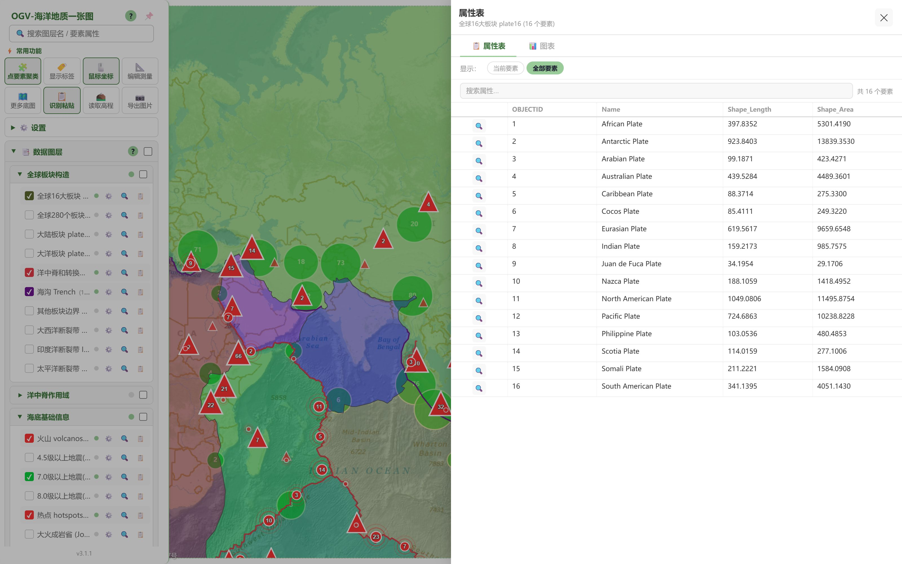
- 弹窗：点选即弹，显示全部属性；"缩放至"飞到该要素，"详情"进入面板。
- 单要素详情：不分页展示所有字段，附带该要素的属性图表。
- 图层属性表：从图层行的 📋 按钮进入，整图层要素以表格浏览——翻页、按字段值搜索、切换"当前图层/全部图层"范围、显示全部字段，每行可一键定位。
- 折线属性表：测量转图层的折线会把长度等量算结果写入属性（如 长度_km），在属性表中与其他字段一起浏览、搜索、定位。
属性图表
属性表不止能"看"，还能"算"：把数值字段一键变成统计图，数量关系一眼看清。
入口：属性表面板顶部的 图表 标签页。
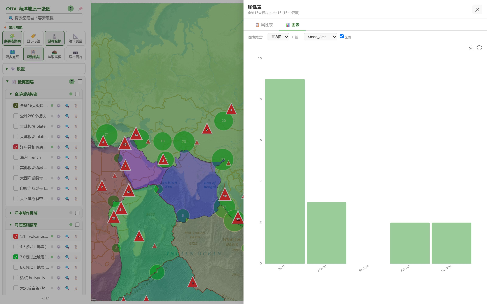
- 五种图型：柱状图、散点图、直方图、饼图、雷达图，按字段类型选择。
- 字段自选：X 轴 / 数值字段 / 分组维度自由搭配，图表即时重绘。
- 交互：悬停查看数值、图例筛选、坐标轴缩放。
- 导出：图表可一键保存为图片，直接用于报告与汇报。
量测工具
距离、面积、半径随手量：画线量长度，画面量面积，画圆得半径——量算结果直接标注在图上。
入口：⚙️ 设置中开启 绘制与量测，地图右侧出现绘制工具条。
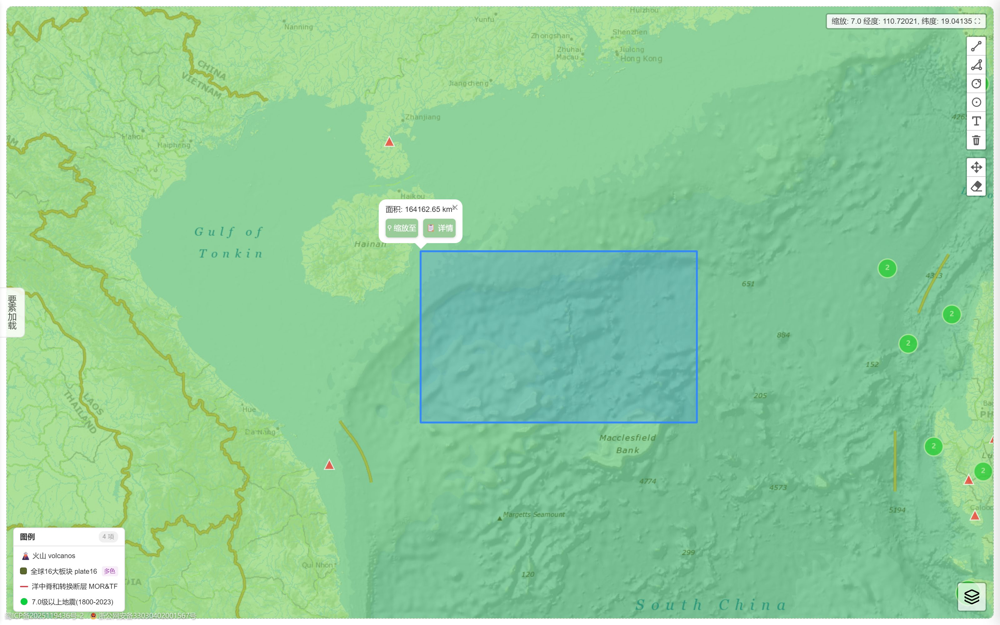
- 五种绘制：点、折线（距离）、多边形（面积）、矩形（面积）、圆（两点定圆，实时显示半径读数，弹窗中可直接改半径）。
- 量算防误触：绘制过程中自动屏蔽要素点选，不会误弹数据弹窗。
- 管理：工具条一键"清除全部测量"；每个图形也可单独删除、编辑。
- 量测转图层：把测量结果转成正式图层（折线自动写入长度字段），参与属性表与导出。
- 导出 JSON：全部测量图形一键导出为 GeoJSON 文件。
搜索与定位
在几十万个要素里找目标：输入关键字，图层名与要素属性同时检索，点击结果直接飞过去。
入口：侧栏顶部 🔍 搜索框（占位符"搜索图层名 / 要素属性"）。
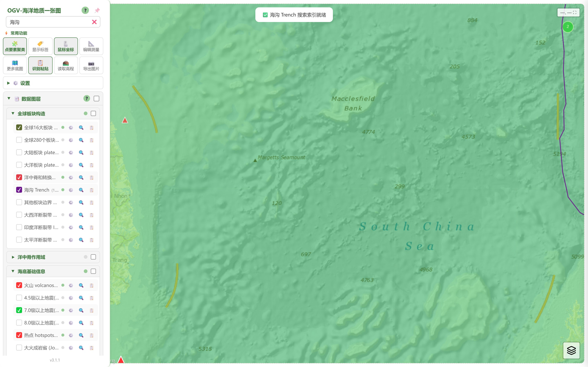
- 双范围检索：同时搜图层名与要素属性值，倒排索引毫秒级响应。
- 点击定位：结果点击后地图飞行定位并高亮该要素/图层；3D 模式下同样支持。
- 深链直达：URL 带
?focus=南海参数，打开链接直接飞到注册过的地名——分享一张"定位好的图"给同事就是这么简单。
极地视图
Web Mercator 在两极严重变形，看极区数据需要真正的极地投影。OGV 提供南北极两套独立投影视图。
入口：常用功能区 🧭 认识极地（或 ⚙️ 设置中的"极地投影视图"开关），顶部出现极地控制条。
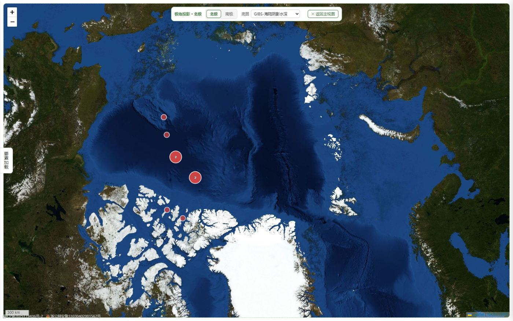
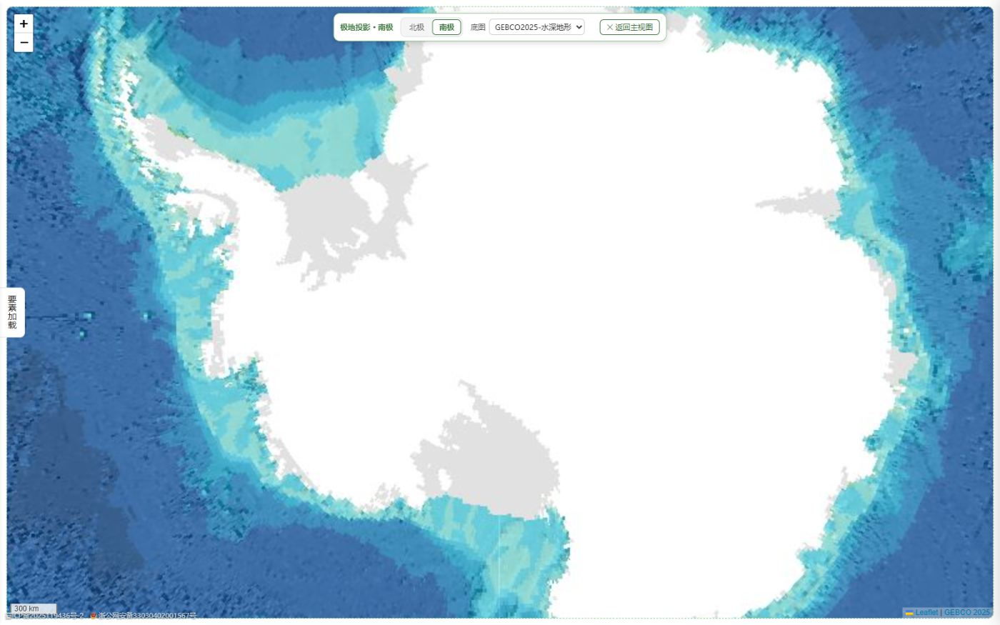
- 独立投影：北极 EPSG:3413 / 南极 EPSG:3031 极球面立体投影，极区形状与面积不再失真。
- 极地专属底图：NASA GIBS、GEBCO 极地影像等对极区友好的底图源，下拉切换。
- 数据同步：主视图勾选的图层自动在极地视图重建渲染，海量点位于极区同样流畅。
- 一键返回：控制条"返回"按钮回到主视图，极地视图为只读浏览，不影响主视图状态。
海量点位渲染
几十万个点位不卡顿的秘诀：Canvas 批量渲染 + 视口裁剪 + 空间索引 + 分层缓存，浏览器里也能"秒开大表"。
- 自动分档：要素数超过阈值自动切 Canvas 渲染（零 DOM、滚动缩放不掉帧），小数据量仍走聚合气泡（MarkerCluster），阅读体验最优。
- 视口裁剪：只渲染当前视野内的要素，平移缩放按需重建。
- 空间索引：RBush 索引支撑聚合与点击命中，13 万+ 标记内存占用可控。
- 传输与缓存：数据 gzip 压缩传输，IndexedDB 本地缓存——第二次打开秒加载，弱网/离线也能看。
- 点击不缺席：Canvas 点位同样可点击弹窗、进属性表，与普通标记体验一致。
导出与出图
看到的就要能带走：截图出图、测量导出、属性数据外带，三条出口覆盖绝大多数汇报场景。
入口：常用功能区 📷 导出图片（快捷键 Ctrl/⌘ + E）；测量/图层导出按钮在各功能区内。
| 导出什么 | 怎么导 | 得到什么 |
|---|---|---|
| 当前地图画面 | 导出图片按钮 / Ctrl+E；导出时自动隐藏侧栏与控件，完成自动恢复 | PNG 截图（桌面走系统截屏，iOS 走内置渲染） |
| 测量图形 | 量测工具条 → 导出 JSON | GeoJSON 文件（含长度/面积字段） |
| 自有图层 | 本地图层导出入口 | GeoJSON 文件 |
| 统计图表 | 图表面板 → 保存图片 | PNG 图表 |